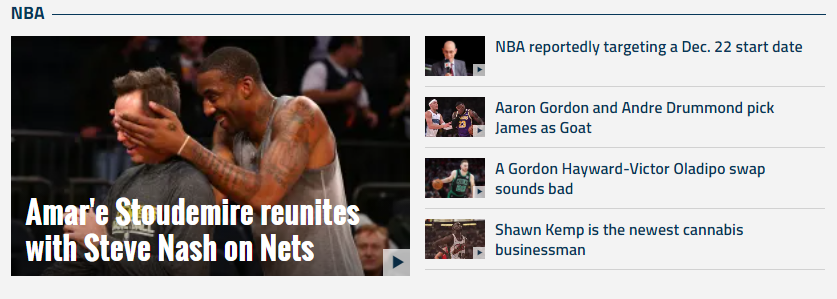

FanSided
NFL
NFL
Power Rankings
Stacking the Box
NBA
NBA
Nylon Calculus
Fantasy Basketball
MBL
Fantasy
Entertainment
Entertainment
Reviews
Interviews
TV
TV
Netflix
Movies
Movies
Star Wars
Ultimate Sports Movies Ranking
WWE
Entertainment
WrestleMania
RAW
SmackDown LIVE
CFB
CFB
CFB Video
College Football Season Preview
College Football Playoff
NHL
Betting
Soccer
Soccer
Premier League
Champions League
MMA
MMA
UFC
Bellator
WNBA
WNBA
High Post Hoops
On The Mark Podcast
NASCAR
Apply
More
More
Write for us
Facebook
Twitter
Instagram
Chicago Bulls
The biggest winners of the NBA coaching carousel
by
Brendon Kleen
Los Angeles Lakers
The Shaq-Kobe Lakers get their definitive history
by
Micah Wimmer
Golf
Naomi Osaka and stepping out of the shadows
by
W.B. Whitted
Dallas Cowboys
Cowboys should tank, but not for Trevor Lawrence
by
Rucker Haringey
NCAA Football
Week 8 betting guide: Love/hate edition
by
Patrick Schmidt
NFL
Saints WR Fowler undergoes surgery, placed on IR
3 WRs Seahawks should try to add after missing AB
3 teams who missed out on Antonio Brown signing
Twitter hopes Antonio Brown brings unrest, not TDs
Tom Brady is building his own team in Tampa Bay
NCAA Football
Graham Mertz delivers near-perfect debut
Patrick Mahomes is in awe of Graham Mertz
Wisconsin scores the most fitting first B1G TD
NFL Draft spotlight: Big Ten prospects on display
Penn State and 5 teams on upset alert in Week 8

Top Stories
Daily DDT
15 hours
WWE Hell in a Cell: 3 reasons why Sasha Banks needs to win
theScore Multi-Sport
14 hours
Bengals' Mixon out vs. Browns due to foot injury
FanSided
15 hours
Michael Thomas' return is in jeopardy because of hamstring injury
Beyond the Flag
15 hours
IndyCar: How Scott Dixon can clinch his 6th championship
FanSided
16 hours
Daniel Jones is only good when he's playing Washington
FanSided
FanSided 250
NFL
More NFL News
»
More NFL Mocks
»
View all NFL Sites
Topics
Fantasy Football
NFL Draft
NFL Mock Drafts
NFL Scouting Combine
NFL Free Agency
Top 25 Super Bowl Performances of All Time
Best NFL Player From Each State
NBA
NHL
SOCCER
More Premier League News
»
More MLS News
»
View all SOCCER Sites
Topics
All Soccer
MLS
Premier League
USMNT
Champions League
Women's World Cup
Serie A
La Liga
Bundesliga
90min.com
Playing for 90
30 Greatest Teams in Premier League History
CFB
More College Football News
»
More College Football Features
»
View all CFB Sites
Topics
SEC
BIG 12
BIG TEN
ACC
PAC 12
College Football Playoff
50 Best Rivalries of All-Time
30 Greatest CFB Dynasties of All-Time
Best CFB Team of All-Time
CBB
More College Hoops News
»
More Busting Brackets
»
View all CBB Sites
Topics
All CBB News
March Madness
Busting Brackets
28 most memorable buzzer beaters in March Madness history
MMA
More UFC News
»
More Bellator News
»
View all 300+ FanSided Sites
Topics
UFC
Bellator
MMA Newsletter
Interviews
Golf
More PGA Tour
»
More LPGA Tour
»
View all 300+ FanSided Sites
Topics
Power Rankings
Fantasy Golf
The Masters
The Open Championship
US Open
PGA Championship
Top 30 Golf Courses
Ranking Augusta National
Racing
More NASCAR
»
More IndyCar
»
View all 300+ FanSided Sites
Topics
NASCAR
IndyCar
FormulaOne
Racing Newsletter
Top Drivers of All-Time
Entertainment
More Movie News
»
More TV News
»
View all Entertainment Sites
Topics
Netflix Originals
Game of Thrones
The Walking Dead
Star Wars
WWE
Hip Hop
Late Night TV
60 Best Sitcoms of All-Time
Top 50 TV Shows on Netflix
Top 50 Movies on Netflix
Our Sites
Apps
Daily Email
Swag